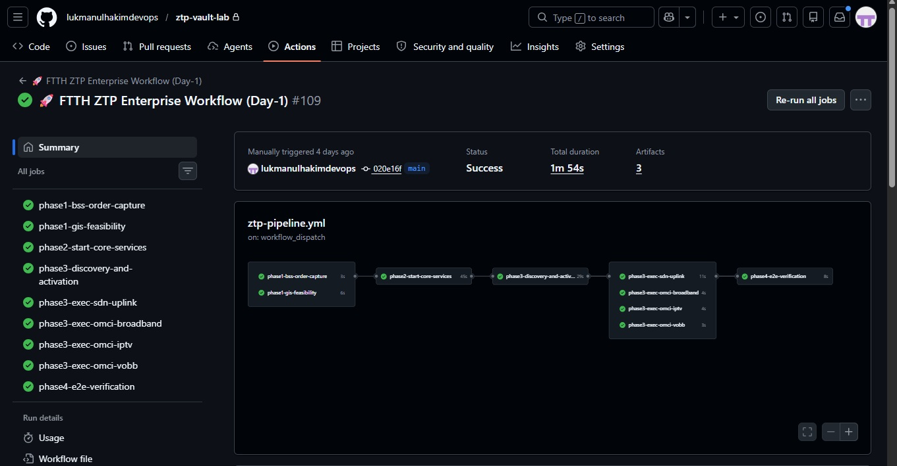
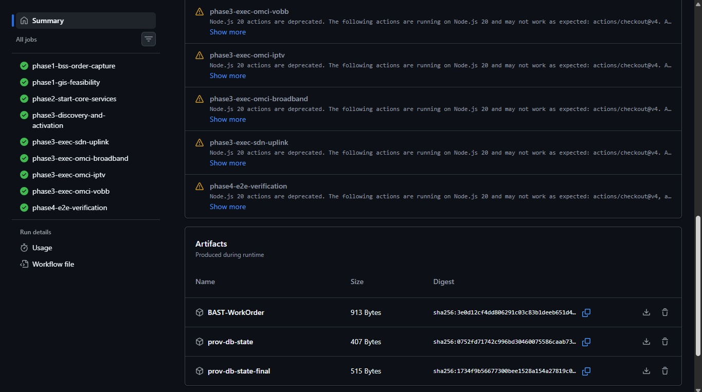

OPERATIONAL
RESILIENCE
BLUEPRINT
v23.0 // Architect: Lukmanul Hakim
From fiber trenches to cloud architecture, built on national infrastructure scale.
Professional Summary
15 years in the trenches (2011): from ISP/Telco support and SysAdmin to IT Governance, Multi-Cloud, and Enterprise Architecture across FinTech, ERP, and Logistics sectors.
In 2014, I was on the ground: coordinating the physical migration of copper networks to FTTH at national infrastructure scale. Not just the cable. The BSS/OSS systems behind it too. Every principle I apply in cloud architecture today, immutable tagging, self-healing systems, decoupled BSS-OSS, Zero Trust, I first understood it as a physical constraint: a buried cable with no ID, a system that couldn't talk to another system, a manhole that shouldn't be open.
Present:
STATUS: COMMERCIAL-GRADE READY (ZTP CORE)
Achieving a sub-15-minute FTTH activation SLA is the baseline. This architecture focuses on the true engineering challenge: Absolute Decoupled BSS-OSS to prevent massive financial leaks. Built on the principles of FMEA (Failure Mode and Effects Analysis) forged over 15 years in the IT infrastructure trenches.
PROOF OF EXECUTION: 1 MINUTE 54 SECONDS SLA
The theoretical 15-minute SLA destroyed by parallel DAG execution. Real GitHub Actions pipeline executing the complete Zero-Touch Provisioning lifecycle in production.


3 THE BLUEPRINT TRANSLATION MATRIX
| Pillar | Physical Logic (OSP) | Cloud Native Translation |
|---|---|---|
| I. IDENTIFICATION | Asset Tagging: Every cable must have a unique coordinate ID before burial. | Immutable Tagging: Every Resource/Pod must have strict Labels (CostCenter, Owner, TTL) or the CI/CD pipeline rejects the deployment. |
| II. RESILIENCE | Preventive Maintenance: Detecting signal degradation before cable snap. | Self-Healing Systems: Implementing Kubernetes Liveness/Readiness probes & Auto-Scaling groups that replace sick nodes before downtime occurs. |
| III. EFFICIENCY | Route Optimization: Finding the shortest cable path to save meters. | FinOps & Rightsizing: Automated scripts that detect idle resources & over-provisioned VCPUs, shrinking the bill without shrinking performance. |
| IV. SECURITY | Physical Access Control: Locking manholes & distribution cabinets. | Zero Trust Architecture: mTLS between services, IAM Roles with Least Privilege, and automated OWASP scanning in the pipeline. |
| V. AIOps & AGENTIC AI | Predictive Analytics: AI-driven analysis of OTDR traces, weather patterns, and historical outage data to predict fiber cuts before they happen. | Autonomous Infrastructure: AIOps platforms (Dynatrace, Datadog) for anomaly detection, auto-remediation, and Agentic AI agents that self-heal, auto-scale, and optimize cloud resources without human intervention. |
📡 Architecture Evolution Path

National Command Center
Real-time Telemetry: Consolidated view of 34 Provinces.
● MANAGED BACKBONE ACTIVE

REGIONAL BACKBONE (WEST)
Gateway: Batam (SG)
MANAGED SEGMENT (CNTRL)
Expansion: Future Ready
HIGH-CAPACITY LOOP (EAST)
Route: North & South
LEGACY STATE (2014)
Monolithic dependencies. Single fiber cut = 15 hours downtime across 4 regions.
MTTR: 15 Hours
GUARDIAN STATE (2025)
Decoupled Microservices. Auto-reroute via backup link in milliseconds.
MTTR: < 300ms (Zero Human Touch)
def optimize_spend(resource_id):
usage = get_cloudwatch_metrics(resource_id)
if usage.cpu < 5%:
resize_instance(resource_id, "t3.micro")
return "SAVED $140/mo"
elif usage.status == "ZOMBIE":
terminate_instance(resource_id)
return "SAVED $500/mo"
# TOTAL SAVINGS: $12,400/mo
From CAPEX Heavy to FinOps Lean.
- Reduced Idle Resource Waste by 40%
- Automated "Zombie Asset" cleanup.
Professional Experience
Subject Matter Expert – Solutions Cloud Architect
Oct 2024 – Present- Advise C-suite and enterprise clients on secure cloud adoption, FinOps strategies, and zero-trust architecture.
- Designed SDLC training frameworks resulting in 95% talent retention and a 25% productivity uplift for engineering teams.
Industry Instructor & Cloud Consultant
Jul 2020 – Present- Deliver hands-on DevSecOps and Multi-Cloud curriculum to enterprise teams.
- Develop training modules focused on SAST/DAST integration in CI/CD, Kubernetes hardening, and secure IaC utilizing Terraform and Ansible.
Head of IT DevOps (Contract)
Sep 2022 – Dec 2022- Led a multi-billion IDR legacy to multi-cloud migration, successfully improving system reliability by 40% with zero critical downtime.
DevSecOps Consultant (Contract)
Jul 2022 – Sep 2022- Automated cloud infrastructure and GitOps workflows, maintaining 99.9% uptime and strictly resolving OJK compliance requirements.
DevOps Consultant (Contract)
Nov 2021 – Jul 2022- Architected a highly available containerized infrastructure for 120+ APIs (99.9% uptime) and successfully cut critical vulnerabilities by 60% through automated DevSecOps pipelines.
DevOps & ERP Migration Specialist (Contract)
May 2020 – Oct 2020- Engineered the migration of Odoo ERP from on-premise to AWS, reducing infrastructure setup time by 50% via robust IaC implementation.
DevOps Infrastructure Consultant (Contract)
Jun 2019 – Sep 2019- Re-architected on-premise cloud infrastructure, achieving 40% faster deployments by standardizing and containerizing the ELK Stack observability pipeline.
Network Consultant (Contract)
Feb 2015 – Jun 2015- Provided advanced network architecture consulting for a major financial institution, ensuring strict High Availability (HA) of critical MPLS networks.
Principal Operations & Compliance Manager
Apr 2013 – Oct 2014- Oversaw an IDR 1.5 Trillion CAPEX Analog-to-FTTH migration project.
- Reduced regulatory violations by 20% and boosted operational efficiency by 15% through the optimization of ETL pipelines (Oracle/PostgreSQL).
Electronic Data Processing Lead
Jan 2013 – Mar 2013- Built foundational IT infrastructure and security protocols from the ground up, automating ticketing and POS data processes.
Customer Care Specialist
Oct 2011 – Oct 2012- Optimized customer support technical workflows, significantly reducing ticket handling and incident response times by 20%.
Technical Skills & System Specifications
1.0 MULTI-CLOUD
AWS, GCP, Azure, Alibaba Cloud, OpenStack
2.0 IaC & CONFIG MGMT
Terraform (Advanced), Ansible, CloudFormation
3.0 CI/CD
GitLab CI, Jenkins, GitHub Actions, Azure DevOps
4.0 SECURITY & DEVSECOPS
SonarQube, OWASP ZAP, Trivy, Vault, IAM
5.0 OBSERVABILITY
ELK Stack, Prometheus, Grafana, Dynatrace
6.0 CONTAINERS & ORCHESTRATION
Docker, Kubernetes (GKE/EKS/AKS), Helm, OpenShift
7.0 GEN AI & DATA
Azure OpenAI, Semantic Kernel, RAG, NLP
8.0 DATABASES
PostgreSQL, Oracle, MySQL
9.0 GOVERNANCE & LANGUAGES
Gov: OJK/BI Compliance, ISO 27001, IT Risk Management, FinOps
Lang: Python, Bash, PowerShell
Education
Bachelor of Economics
Mercu Buana University, 2015-2018 | GPA: 3.17/4.00
Professional Development
Advanced Professional Training
Microsoft elevAIte with Dicoding Program (Completed May 2025)